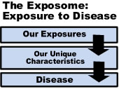

Exposome and Exposomics
 ShareCompartir
ShareCompartir

Overview
What is the exposome?
Success in mapping the human genome has fostered the complementary concept of the "exposome". The exposome can be defined as the measure of all the exposures of an individual in a lifetime and how those exposures relate to health. An individual’s exposure begins before birth and includes insults from environmental and occupational sources. Understanding how exposures from our environment, diet, lifestyle, etc. interact with our own unique characteristics such as genetics, physiology, and epigenetics impact our health is how the exposome will be articulated.
Exposomics is the study of the exposome and relies on the application of internal and external exposure assessment methods. Internal exposure relies on fields of study such as genomics , metabonomics , lipidomics , transcriptomics and proteomics . Commonalities of these fields include 1) use of biomarkers to determine exposure, effect of exposure, disease progression, and susceptibility factors, 2) use of technologies that result in large amounts of data and 3) use of data mining techniques to find statistical associations between exposures, effect of exposures, and other factors such as genetics with disease. External exposure assessment relies on measuring environmental stressors. Common approaches include using direct reading instruments, laboratory-based analysis, and survey instruments. The extent to which internal and external exposure assessment will contribute to our understanding of the exposome is being debated as each approach has certain merits.
A key factor in describing the exposome is the ability to accurately measure exposures and effect of exposures. Many of the "omics" technologies have the potential to further our understanding of disease causation and progression. Metabonomics and adductomics (DNA and protein adduct measurement) have been used in the past to establish exposure-disease relationships. Research is needed to determine the utility of the "omics" technologies in defining the exposome.
Recently, some thought leaders in the exposome have pushed to narrow the focus to include only the study of metabonomics. Many of these small molecular weight compounds act as signals to regulate biological systems. They show promise in deciphering disease mechanisms. While metabonomics has great potential to contribute to the study of the exposome, it has not been established that it is the only approach needed to clearly articulate the important aspects of the exposome.
Why should we study the exposome?
One of the promises of the human genome project was that it could revolutionize our understanding of the underlying causes of disease and aid in the development of preventions and cures for more diseases. Unfortunately, genetics has been found to account for only about 10% of diseases, and the remaining causes appear to be from environmental causes. So to understand the causes and eventually the prevention of disease, environmental causes need to be studied.
What are the challenges of advancing exposomics?
Some obvious challenges that may limit the progress in this field of study are evident. An individual’s exposome is highly variable and dynamic throughout their lifetime. The impact of exposures can also vary with the individual’s stage of life. For examples, exposure to the drug thalidomide during specific developmental periods in utero causes malformation of limbs; exposure to lead in infants and early childhood can lead to cognitive deficiencies. Exposures during early years may also predispose an individual to certain chronic diseases later in life. NIOSH has a unique opportunity to contribute occupational exposure information to this emerging field.
The impact of environmental or occupational exposures can be different for each individual because of differences in genetic and other personal factors. Some people will develop a disease while another person with the same or greater exposure will not. The exposome may help to determine the underlying causes for this difference. Mapping an entire exposome for an individual will be difficult, if not impossible because of the complexity of a life-time of exposure. Specific exposures can be difficult to measure due to lack of sensitive methods or not knowing that an exposure has even occurred. Even when the exposure is known, measuring that exposure can be difficult since the indicators of exposure may be transient, such as for most chemicals, which are rapidly excreted and only a short time frame exists to directly measure them. In other cases, past exposure can be defined using legacy biomarkers. A common example of a legacy biomarker is antibodies produced by exposures to environmental or occupational insults.
The experience in studying genetic involvement in diseases serves as a model for studying the relationship between exposures and disease. In the past, hypotheses of the role of specific genes in disease were tested. Currently, genome-wide association studies (GWAS) are performed with the aid of new technologies which produce cheaper and faster analyses to generate hypotheses about the relationship between genes and disease. These studies identify gene pathways associated with disease, and, when an association has been identified specific hypotheses about the role of specific genes in disease can be generated and tested. An approach to the exposome is to use internal biological media and measure multiple endpoints. The data would be analyzed to identify associations between health outcomes and biomarkers of exposures, biomarkers of response, or patterns of biomarkers (exposure-wide association studies [EWAS]).
One important aspect of the exposome will be adherence to strict ethical principles as the exposome is deciphered. This will be paramount to ensure that the rights of individuals are not compromised when determining exposures and the relationship to their health.
What are the research needs?
NIOSH has identified three priority areas for the occupational exposome
-
Investment in and exploration of new technologies and tools to measure internal and external exposures.
While some might consider investing in new technologies as high risk, the promise of a significant reward makes it essential that some investment in new technologies should occur. The National Institute for Environmental Sciences (NIEHS) funded an exposure biology program. This was the first program that NIEHS funded that was devoted to developing new tools for exposure assessment. These tools ranged from exposure strategies to the development of direct reading devices for exposure or response markers. In addition, the "omics" technologies offer great promise to help elucidate the exposome both in identifying exposures and response to exposures. These technologies offer the promise of speed, cost, and large data gathering capacities. All of these characteristics are necessary to be able to establish critical links between exposure, response and disease. Other high throughput technologies, such as fluorescence covalent microbead immunosorbent assay, may also offer these same characteristics.
-
Molecular epidemiology studies are needed to determine associations between exposures and disease.
Molecular Epidemiology studies to identify relationships between occupational exposures and health outcomes are critical and can provide needed information about disease pathways and processes. Along with laboratory validation, field validation for biomarkers needs to be accomplished. Field studies with the purpose of biomarker validation are needed. Improved study designs or survey instruments are important to understand confounders and multiple exposures and determine how they change susceptibility. Standardization of data collection and storage may be useful for the utilization of that the information in other studies.
-
Development and validation of biomonitoring techniques for both legacy and response monitoring.
Development of new technologies is critical for the exposome initiative to succeed. For the Human Genome Project and subsequent genomics studies, new, faster technologies allowed for increased data collection and gathering providing the knowledge base central in determining associations between genes and diseases. These biomonitoring techniques can be broadly classified into the two areas of legacy biomarkers and response biomarkers.
Legacy biomarkers indicate past exposures that may be important to determine the effect that lifetime exposures have on present health status. These biomarkers may pinpoint to a specific chemical or insult or may pinpoint to specific damage that occurred do to a class of chemicals, such as DNA alkylators. Antibody formation, metabolites, adducts, genetic mutations, epigenetic changes, toxicogenomic effects, etc. may all provide information about past exposures. NIOSH has expertise and current research efforts in these areas and can provide valuable information in determining cause and effect relationships between an exposure and a response.
Other areas in which NIOSH could contribute include making occupational exposure information publicly accessible. The development of occupational health and toxicity models would also be beneficial.
How is NIOSH contributing?
NIOSH's focus in the exposome lies in its efforts to improve our understanding of occupational exposures and resulting work-related diseases. The Institute's ongoing contributions to occupational epidemiology, the development of sensitive analytical methods, characterization and validation of biomarkers, improving sampling strategies and development of exposure databases will advance the field of occupational exposomics. As occupational exposures and their relationship to diseases are elucidated, these contributions will lead to improved occupational health. The exposome provides an opportunity to understand occupational diseases and how to prevent them.
NIOSH Contacts
For additional information, contact D. Gayle DeBord , Paul Middendorf, Mark D. Hoover
NIOSHTIC-2
NIOSHTIC-2 search results on Biological Monitoring
NIOSHTIC-2 search results on Exposure Assessment for Chemicals
NIOSHTIC-2
is a searchable bibliographic database of occupational safety and health publications, documents, grant reports, and journal articles supported in whole or in part by NIOSH.
Exposure and Biomonitoring Links
Biomonitoring Info
Information on biomonitoring from the Environmental Health Research Foundation
CDC Biomonitoring And Environmental Public Health Tracking
Environmental public health tracking (EPHT) is the ongoing collection, integration, analysis, interpretation, and dissemination of data on environmental hazards, exposures to those hazards, and health effects that may be related to the exposures.
CDC/NCEH National Biomonitoring Program
CDC’s Environmental Health Laboratory operates the National Biomonitoring Program (NBP). NBP currently measures more than 450 environmental chemicals and nutritional indicators in people.
Environmental Health Investigations Branch - California
EHIB uses biomonitoring in studies linking environmental exposures and pollution-related diseases, for environmental health tracking and to explore body burdens in populations that may be at increased risk from exposure.
Exposome Alliance
The human exposome project would attempt to characterize the internal exposomes of individuals of multiple ethnicities who live in different environments and have widely differing risk factors for disease. In this way we would hope to understand the diversity and patterns of human exposures in a manner similar to the HapMap project, which aims to describe the common patterns of human DNA sequence variation.
Genes and Environment Laboratory (GEL)
GEL is a unit within the Division of Environmental Health Sciences in the School of Public Health at University of California Berkeley (UCB), whose mission is to identify the adverse effects of chemicals on human health, to determine how genetic variation influences disease susceptibility and the effects of environmental exposures, and to study the mechanisms involved.
Maximum Allowable Concentrations (MAK) and Biological Tolerance Values (BAT)
Listing of MAK and BAT values that make suggestions for the maximum allowable concentration of a working substance in the workplace atmosphere as a gas, steam or aerosol that, according to current knowledge, does not impair the health of employees exposed during eight-hour working days over the long term. Furthermore, the working substances are classified according to their carcinogenic, germ cell mutagenic, reproduction-endangering, sensitizing, and skin-absorptive effect.
NIOSH Data and Statistics Gateway
Includes Gene Expression Profiles of Di-n-butyl Phthalate in Normal Human Mammary Epithelial Cells.
NIEHS Exposure Biology Program
The goal of this exposure biology program is to develop new technology and assays to generate precise measurements of human exposure to chemical and biological agents that may lead to disease or dysfunction.
NIH Genes, Environment and Health Initiative
On February 8, 2006 Health and Human Services announced funding of this initiative to conduct genetic analysis and to develop new tools to measure environmental exposures that affect health.
NIOSH Genetics in the Workplace: Implications for Occupational Safety and Health
The purpose of this document is to consolidate the diverse literature and opinions on genetics in the workplace, to flag important issues, and to provide some considerations for current and future research and practice.
NIOSH Specific Medical Tests or Examinations Published in the Literature for OSHA-Regulated Substances
This database lists the specific medical tests published in the literature for OSHA regulated substances.
Office of Environmental Health Hazard Assessment - California
The purpose of the California Environmental Contaminant Biomonitoring Program is to determine levels of environmental chemicals in a representative sample of Californians, establish trends in the levels of these chemicals over time and assess the effectiveness of public health efforts and regulatory programs to decrease exposures to specific chemicals.
The Human Exposome Project
An exposome resource developed by researchers at Georgia Tech and Emory University.
Other NIOSH Resources
Exposure Assessment Research
Exposure Assessment is the multi-disciplinary field that identifies and characterizes workplace and environmental exposures, develops estimates of exposure for exposure-response and risk assessment studies, and evaluates the significance of exposure and effectiveness of intervention strategies. Exposure assessment is a critical component for advancing the exposome.
NIOSH Manual of Analytical Methods
NIOSH Publication No. 2003-154 (2003)
NMAM is a collection of methods for sampling and analysis of contaminants in workplace air, and in the blood and urine of workers who are occupationally exposed. These methods are also applicable to evaluation of environmental exposures. These methods have been developed or adapted by NIOSH or its partners and have been evaluated according to established experimental protocols and performance criteria. NMAM also includes chapters on quality assurance, sampling, portable instrumentation, etc. Expanding, validating, and sharing such methods for use in all aspects of exposomics will be a critical enabling activity.
Occupational Exposure Sampling Strategies Manual
NIOSH Publication No. 77-173 (January 1997)
NIOSH is soliciting input from its Stakeholders on their needs for information and guidance to be included in a revision of the "Occupational Exposure Sampling Strategies". The OESSM has been a seminal document on exposure assessment and served as the basis for NIOSH recommendations and guidance to OSHA and the professional community for many years. However, the underlying science supporting occupational exposure assessment as well as the needs for, and uses of, occupational exposure assessment have advanced and evolved since the Manual was published. In response to these advancements, NIOSH has decided to move forward with developing updated guidance and recommendations that reflect these changes and help move occupational exposure assessment into the future.
- Page last reviewed: April 21, 2014
- Page last updated: April 21, 2014
- Content source:
- National Institute for Occupational Safety and Health Division of Applied Research and Technology